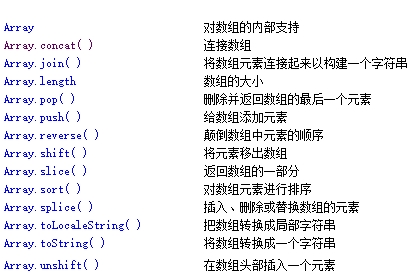
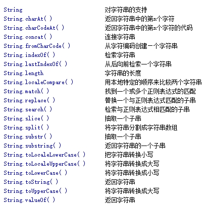
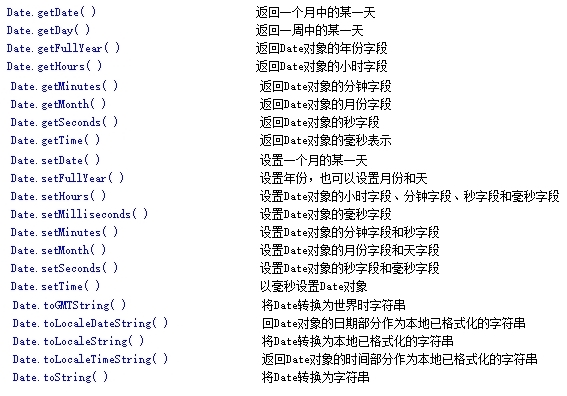
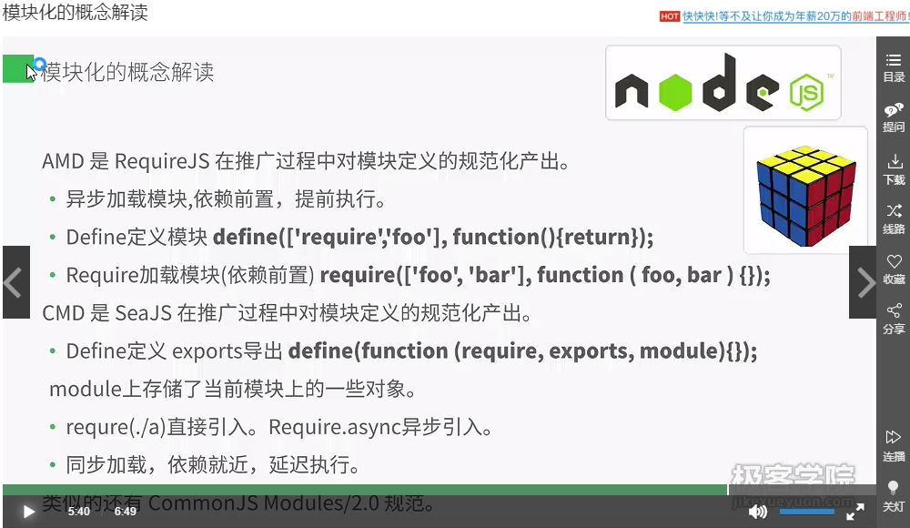
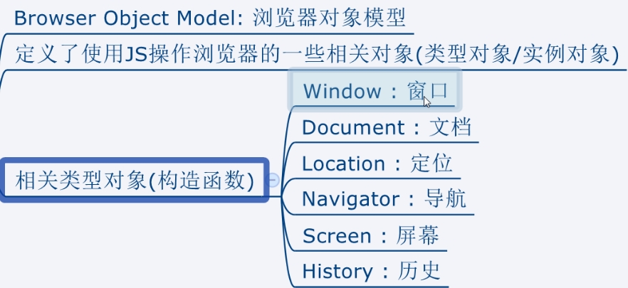
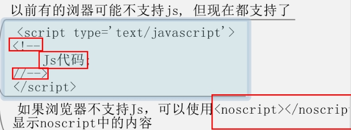

基本知识
基本数据类型：Undefined、Null、Boolean、Number（NaN,Infinity）、String复合（引用类型）Function/Array/Object
typeof : 返回数据类型的字符串值, 用来区别基本数据类型。instanceof : 判断左边的数据是否是右边类型的(boolean值), 用来区别引用类型
进制：i=017(八进制)，i=0xA1(十六进制)，i=a.toString(num)(num进制，其中a为任意一个数)
var a=undefined可以写为var a=void 0;
位运算符 (1)<< 向左移位,比如1<10就等价于1*2^10=1024又如12可以写为3<<2; (2)~位取反，如：~5=-5-1=-6;(3)~~5.2=5相当于Math.floor()
字面量/直接量(直接表达数据的方式) 例如var a=[];是字面量 var a=new Array()就不是。var o={}是，var o=new Object()就不是
当数值大于1.79e308为无穷大Infinity,当数值小于-1.79e308为负无穷大-Infinity;"abc"*1=NaN;isNaN(变量)可以判断其是否是NaN
变量定义了但没赋值就是undefined;console.log(typeof null)输出的是object
parseInt(15.6)可以取整去小数部分，也可以将字符串转换为数值parseInt('12a')=12;Math.floor(num)去小数取整。Math.Random(num)四舍五入。Number.toFixed(digits) 取小数点后多少位, 去除部分四舍五入
function a(b,c,d){} a.length=3(也就是参数的个数);console.log(([]+{}).length)=>15;{}.toString()=>"[object Object]" 一个{}+别的东西就会自动调用{}.toString()方法
标识符就是指程序员定义的变量名；关键字是指js语法中已经使用过的单词；保留字是为将来js语法准备的单词
toAdd(驼峰命名法)to_add(蛇形命名法)
将一个数转化为字符串：num+'';将一个字符串转化为数字：+string或string*1或string-0或parseInt(string)
function a(){};第一种： true&&a() 第二种false||a().自己体悟吧！！
a++先运算（取值）再自增，++a先自增在运算（取值）
var a=1; a=a++ + ++a;console.log(a);a=>4详解：
a++:将a为1取出来运算，a为2赋值给内存;
++a:此时a为2.将a为3赋值给内存，a为3取出来运算;
a=1+3:此时将a=4赋值给内存;
console.log(a)将a从内存读出为4.
var a='';a.constructor=>function String(){[native code]}
do...while是不满足条件的情况下，也会执行一次；while是不满足条件的话，不会执行中间的语句
for(;;){}会死循环。continue跳过当次循环，进入下次循环
for(expression1;expression2;expression3) {
statements;
}
说明:
1. 第 一个执行的是expression1, 一般是赋值;
2. 第二个执行的是expression2, 它是一个boolean结果的表达式
结果为false: 结束循环, 循环体就一次都未执行
结果为true: 进入3;
3. 第三个执行循环体语句statements;
4. 第四个执行expression3, 可能会影响到expression2的结果(导致为false);
5. 进入2
var arr=[...];for(var i in arr)可以取到数组的下标（对象的key）。for(var i of arr)可以取到数组的元素（对象的value）
定义函数（复用代码；模块化，便于阅读）：
*方式一: function语句（这种方式调用函数可以在定义函数前后）
function 函数名称([形参,...]){
代码段;
return 返回值;
}
*方式二: 函数字面量（这种方式调用函数只能在定义函数后）
var 名称 = function ([形参,...]){
代码段;
return 返回值;
}
*方式三: new Function()
var 名称 = new Function("形参1","形参2", "函数体代码段");
*注意
函数名: 严格区分大小写, 要有意义,驼峰标记法, 如果重复了后面覆盖前面的；
形参只要指定名称即可, 可以没有, 也可以多个；
function语句后面不用加分号, 而函数直接量后要加分号；
函数可以有返回值, 也可以没有, 没有时返回的是undefined；
如果不调用函数, 函数体不会执行
*参数
实参个数可以与形参个数不同；
如果实参多了, 后面多的实参会被忽略；
如果实参少了, 后面多的形参会赋值为undefined；
在函数体中可以通过arguments来操作实参；
arguments : 实参的数组
arguments.length: 实参的个数
arguments[i] : 某个参数
function fun(){j=0}此时j在函数外面也可以用到，这叫做变量的提升；如果var j=0就只能在函数内部使用
一段简单而又神奇的代码：var i=5;function fun(){console.log(i);var i=7;}输出结果是"undefined"若函数体中var 去掉，结果为5
对象的分类
*按功能分
函数
数组
对象(Object)
*按定义者分
>ECMAScript定义的
***构造函数对象
Object
Array
Function
Date
RegExp
Number
Boolean
String
***一般函数对象
parseInt()
isNaN()
EncodeURI()
......
***对象(object)
Math
>浏览器BOM和DOM定义的
window
document
......
>程序员自定义的
函数
数组
对象(Object)
function fun(){}； new fun()是一个构造函数，返回的是一个对象
创建对象的三种方式：1.new Object() 2.{...} 3.new 构造函数():function Person(name,age){this.name=name;this.age=age;} var p=new Person('li',24)
为对象增删属性：var a={};增加属性：a.b='3',a['c']='4';删除属性：delete a.c;特点地,arr=[],a['d']=3为数组添加特殊下标的元素,此时只能用for-in遍历出来
console.log(this)如果在html的script的标签中，指的是全局变量window，如果是在node中指的是全局变量global
创建数组的两种方式：1.[,,,]2.new Array()如果Array()的括号里有数值，则指定了数组元素的个数;new Arrray('a','b','c')===['a','b','c'];删除数组所有元素：Array.length=0,取数组前n个元素Array.length=n;
var a={...}.若var b=Object.assign({},a)，此时b的属性和方法与a相同,它们指向不同的引用，a的属性变化不会引起b属性的变化
;若var b=a,此时b的属性方法也与a相同，但它们指向相同的引用，a的属性或方法的变化会引起b相应的变化。如果assign({},a,b,...)就是将这些对象合并
Object.keys({...}),得到某个对象所有键的集合；返回一个数组
let 命令，用来声明变量，只在块级作用域有效，不
存在变量提升，不允许重复声明，允许在块级作用域内声明函数
，声明的函数可以提升。const 命令，声明一个常用，一旦声明，常量的值就
不能改变
ES5 中操作数组的常用方法
----> forEach()：相当于一个 for 循环，但是中途不能
退出，即 return、break等结束循环的语句没有作用。示例：
arr.forEach( function(value,index) { } ); 其中 value
是指数组中的每一个元素，index 是指每一个元素对应的下标。
forEach() 只能用于数组，不能用于伪数组，如果伪数组想使用
forEach() 方法，则需要调用 apply() 或者 call() 方法。
----> map()：map() 函数中可以使用 return ，但是
return 的作用不是结束循环，而是将数组内容经过映射到新的
数组中，return 就是返回新的数组。
----> filter()：过滤，将符合条件的元素找出来。
slice(-n)与substr(-n)的应用，如要实现'15803716671'变为'158***671'则用
function bian(str,len){
len=len||3;
return str.substr(0,len)+'***'+str.substr(-len)
}
bian('15803716671')
来实现
原型
在ES6中箭头函数(arg)=>(a+b)等价于(arg)=>{return a+b;}
Error: 1.ReferenceError(引用错误) 在读取不存在的变量时抛出
2.TypeError 当一个值的类型错误时，抛出该异常
3.SyntaxError 语法异常
0.1+0.2问题，得到0.30000000000000004.解决：function fix(num,digits){return num.toFixed(digits)*1} fix(0.1+0.2,2)
判断是否为数组对象：obj.constructor===Object; arr.constructor===Array,es6的写法Array.isArray(arr)
判断一个元素是否在数组中（一个对象是否有这个属性）item in array==true/property in obj==true ;obj.hasOwnProperty('property')
JSON.stringify(obj,['name'],4)//过滤出obj对象的name属性，并以4个空格的距离展示。JSON.stringify(obj,function(key,val){return key=='key1'?undefined:val},4)//去掉属性为key1的部分。 JSON.parse(obj,receiver)//作用同左
JavaScript的基本规范？
1.不要在同一行声明多个变量。
2.请使用 ===/!==来比较true/false或者数值
3.使用对象字面量替代new Array这种形式
4.不要使用全局函数。
5.Switch语句必须带有default分支
6.函数不应该有时候有返回值，有时候没有返回值。
7.For循环必须使用大括号
8.If语句必须使用大括号
9.for-in循环中的变量 应该使用var关键字明确限定作用域，从而避免作用域污染。
谈谈This对象的理解
this总是指向函数的直接调用者（而非间接调用者）；
如果有new关键字，this指向new出来的那个对象；
在事件中，this指向触发这个事件的对象，特殊的是，IE中的attachEvent中的this总是指向全局对象Window；
eval是做什么的？
它的功能是把对应的字符串解析成JS代码并运行；
应该避免使用eval，不安全，非常耗性能（2次，一次解析成js语句，一次执行）。
由JSON字符串转换为JSON对象的时候可以用eval，var obj =eval('('+ str +')');
bind的使用
parseInt(num,jz)
fun.bind(null,para),表示fun函数锁定第一个参数为para
fun.bind(this)指的是强制给函数里的绑定this，以方便函数内部中this.变量调用;如果是es6的箭头函数，则不需要bind，函数里的this默认指的是其最近层的作用域
with的使用
with 语句用于设置代码在特定对象中的作用域。
var sMessage = "hello";
with(sMessage) {
alert(toUpperCase()); //输出 "HELLO"
}
在这个例子中，with 语句用于字符串，所以在调用 toUpperCase() 方法时，解释程序将检查该方法是否是本地函数。如果不是，它将检查伪对象 sMessage，看它是否为该对象的方法。然后，alert 输出 "HELLO"，因为解释程序找到了字符串 "hello" 的 toUpperCase() 方法。
this 对象 返回“当前”对象。在不同的地方，this 代表不同的对象。如果在 JavaScript 的“主程序”中（不在任何 function 中，不在任何事件处理程序中）使用 this，它就代表 window 对象；如果在 with 语句块中使用 this，它就代表 with 所指定的对象；如果在事件处理程序中使用 this，它就代表发生事件的对象。
提示：with 语句是运行缓慢的代码块，尤其是在已设置了属性值时。大多数情况下，如果可能，最好避免使用它。
javascript 代码中使用严格模式的方法：
在js代码的开头加上"use strict";
在某个函数内部的第一句加上"use strict";
使用严格模式的作用：
使JS编码更加规范化的模式,消除Javascript语法的一些不合理、不严谨之处，减少一些怪异行为。
消除代码运行的一些不安全之处，保证代码运行的安全
提高编译器效率，增加运行速度
new操作符具体干了什么呢?
1、创建一个空对象，并且 this 变量引用该对象，同时还继承了该函数的原型。var obj = {};
2、属性和方法被加入到 this 引用的对象中。obj.__proto__ = Base.prototype;
3、新创建的对象由 this 所引用，并且最后隐式的返回 this 。Base.call(obj);
DOM操作——怎样添加、移除、移动、复制、创建和查找节点?
（1）创建新节点
createDocumentFragment() //创建一个DOM片段
createElement() //创建一个具体的元素
createTextNode() //创建一个文本节点
（2）添加/移动、移除、替换、插入、复制
appendChild(),如果添加已经存在的元素，会将元素从原来的位置移到新的位置如：
var ul = document.getElementByIdx_xx_x("myList"); //获得ul
ul.appendChild(ul.firstChild); //把ul的第一个元素节点移到ul子节点的末尾
removeChild()
replaceChild()
insertBefore() //在已有的子节点前插入一个新的子节点
cloneNode() 方法，用于复制节点， 接受一个布尔值参数， true 表示深复制（复制节点及其所有子节点）， false 表示浅复制（复制节点本身，不复制子节点）
var ul = document.getElementByIdx_xx_x("myList"); //获得ul
var deepList = ul.cloneNode(true); //深复制
var shallowList = ul.cloneNode(false); //浅复制
（3）查找
getElementsByTagName() //通过标签名称
getElementsByName()
getElementById() //通过元素Id，唯一性
（3-1）更为高级的查找
document.querySelector('name'),其中name可以为元素(a),class(.a),id(#a);
document.querySelectorAll('names'),可以查到同名元素组
（4）属性操作
setAttribute(name,value) //设置属性值
removeAttribute(name) //删除属性
getAttribute('type') //用来取得属性的值
.call() 和 .apply() 的区别？
fun.call(obj, parameters参数) 将函数作为对象的方法调用;fun.apply(obj, parameters数组) 将函数作为一个对象的方法调用 如：Math.min.call(null,3,4,5)=3
var arr=[3,1];add.call(sub,3,1) == add.apply(sub,arr)
Array.apply(null, {length:5})将会生成了一个长度为5的数组，每个元素都是undefined;
//生成一个[3,3,3,3,3]
Array.apply(null, {length:5}).map(function () {
return 3;
});
另：es6的写法：Array.from({ length: 5 }).map(()=> {return 3})
另：Array(5).fill(3)
那些操作会造成内存泄漏？
setTimeout 的第一个参数使用字符串而非函数的话，会引发内存泄漏。
闭包、控制台日志、循环（在两个对象彼此引用且彼此保留时，就会产生一个循环）
用js实现千位分隔符?(来源：前端农民工，提示：正则+replace)
function commafy(num) {
num = num + '';
var reg = /(-?d+)(d{3})/;
if(reg.test(num)){
num = num.replace(reg, '$1,$2');
}
return num;
}
另：num.replace(/\B(?=(\d{3})+(?!\d))/g,',')
另：
function formatCash(str){
return str.split("").reverse().reduce((pre,next,index)=>{return ((index%3)?next:(next+','))+pre})
}
事件
debounce和throttle函数
添加事件
addEvent : function(element, type, handler) {
if (element.addEventListener) {
//事件类型、需要执行的函数、是否捕捉
element.addEventListener(type, handler, false);
} else if (element.attachEvent) {
element.attachEvent('on' + type, function() {
handler.call(element);
});
} else {
element['on' + type] = handler;
}
}
移除事件
removeEvent : function(element, type, handler) {
if (element.removeEventListener) {
element.removeEventListener(type, handler, false);
} else if (element.datachEvent) {
element.detachEvent('on' + type, handler);
} else {
element['on' + type] = null;
}
}
阻止事件 (主要是事件冒泡，因为IE不支持事件捕获)
stopPropagation : function(ev) {
if (ev.stopPropagation) {
ev.stopPropagation();
} else {
ev.cancelBubble = true;
}
}
取消事件的默认行为
preventDefault : function(event) {
e=e||event;
if (event.preventDefault) {
event.preventDefault();
} else {
event.returnValue = false;
}
return false;
}
获取event对象的引用，取到事件的所有信息，确保随时能使用event
getEvent : function(e) {
var ev = e || window.event;
if (!ev) {
var c = this.getEvent.caller;
while (c) {
ev = c.arguments[0];
if (ev && Event == ev.constructor) {
break;
}
c = c.caller;
}
}
return ev;
}
获取事件目标
getTarget : function(event) {
return event.target || event.srcElement;
}
事件的全局捕获与释放
捕获事件: 只要产生了此事件, 当前元素就能捕获到此事件
if(divEle.setCapture) {
divEle.setCapture(); //全局捕获事件
}
释放捕获: 不再捕获此事件
if(divEle.releaseCapture) {
divEle.releaseCapture();//释放全局捕获
}
只有IE和FireFox有, chrome中没有
dom事件代理函数(使用原生js实现一个事件代理，兼容IE)
- 代码
function matchSelector(ele, selector) {
if (/^#/.test(selector)) { //匹配id
return '#' + ele.id === selector
}
if (/^\./.test(selector)) { //匹配classname
return ele.classList.contains(selector.substr(1)) //classList不兼容IE，此处不是重点
}
return ele.tagName.toLocaleLowerCase() === selector; //匹配tagname
}
/**
* @param ele 父元素
* @param selector 目标选择器
* @param type 事件类型
* @param fn 事件响应函数
*/
function delegateEvent(ele, selector, type, fn) {
function handle (e) {
e = e || window.event;
let target = e.target || e.srcElement;
if (matchSelector(target, selector)) {
fn.call(target, e);
}
}
if (ele.addEventListener) {
ele.addEventListener(type, handle)
} else {
ele.attachEvent(type, handle)
}
}
- 调用示例
delegateEvent(document.querySelector('ul'), '.foo', 'click', function(e) {
console.dir('class');
});
delegateEvent(document.querySelector('ul'), '#a', 'click', function(e) {
console.log('id');
});
delegateEvent(document.querySelector('ul'), 'li', 'click', funcion(e) {
console.log('tag name');
});
JS的常用类型及方法
Array

array方法详解(包含数组去重、排序算法...)
String

Date

例如：var date=new Date();date.setTime(date.getTime()+1000*60*60*24*2);//两天之后
RegExp
正则相关说明
JS的模块化
原生模块化（未使用模块加载器之前）
var module1 = (function(){
var _count = 0;
var m1 = function(){
//...
};
var m2 = function(){
//...
};
return {
m1 : m1,
m2 : m2
};
})();

JS的BOM操作

window.alert('哈哈');//弹出对话框
document.getElementsByClassName('nav');//查找元素
location.href='https://www.baidu.com';//跳转到百度
console.log(navigator.userAgent);//浏览器的信息
history.back();//页面回退
JS的DOM操作
基本操作
alert('弹框内容'); document.write('输出内容'); console.log('控制台打印内容'); confirm('确定/取消弹框'); prompt('确定/取消弹框（含输入框）');
setTimeout(code,ms);//超时,返回timeoutId clearTimeout(timeoutId);//清除超时 setInterval(code,ms);//循环执行 clearInterval(intervalId)//清除
scrollBy(X,Y);//按照指定像素值滚动 scrollTo(X,Y);//把内容滚动到指定坐标 window.open(url);//打开指定链接 window.close();//关闭当前窗口
小示例
<button onclick="console.log('哈哈')">我点</button>
<a href="javascript:alert('呵呵')">点我</a>

dom操作详解